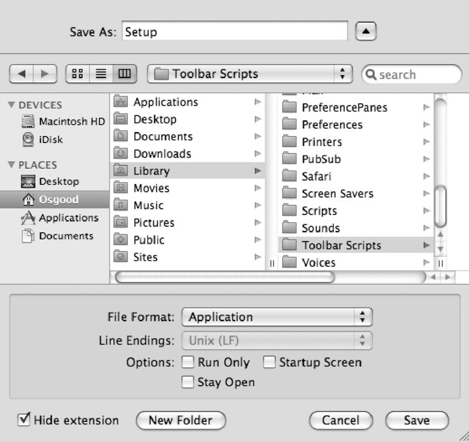
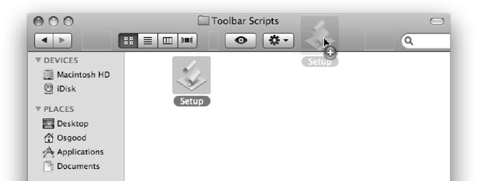
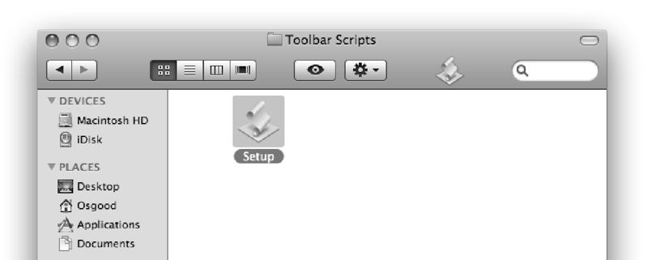

Saving the Desktop Setup Script
Now back to our script. Since this script is a useful mechanism for resetting the Desktop display, let’s save the script as a script application, or applet, and install it in the Finder toolbar for easy accessibility from within any open Finder window.
Choose Save from Script Editor’s File menu. In the sheet, navigate to your home directory. Click the New Folder button, and create a new folder in the home folder named Toolbar Scripts.
Next, save the script as a self-running application named Setup by choosing Application from the File Format pop-up menu in the sheet. Do not select any of the Options check boxes at the bottom of the sheet. Click the Save button, and the new applet is saved in the newly created folder in your home folder.
{kind=link}

The Script Editor Save sheet.
Now, in your home directory, open the Toolbar Scripts folder you just created. Drag the Setup script applet icon to the Finder window toolbar, and release the mouse once the cursor changes to include a plus sign (+).
{kind=link}

Add items to a Finder window’s toolbar by dragging them onto the toolbar.
{kind=link}

A script application in the Finder toolbar.
The script is now available from within any open Finder window. Anytime you want to return your Desktop to your default setup, just click the script icon in the toolbar!
Be sure to customize the properties of the Setup script to your preferences for open windows, view methods, and window sizes and positions.